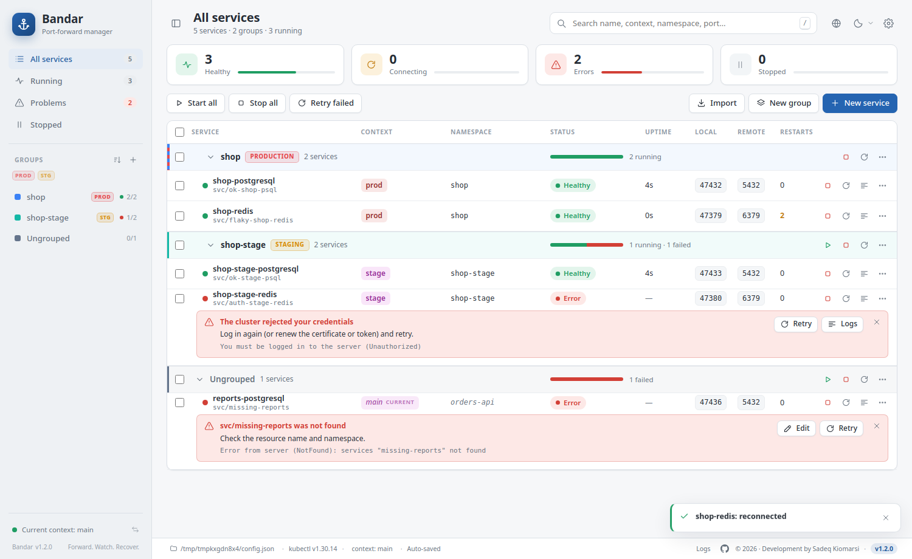
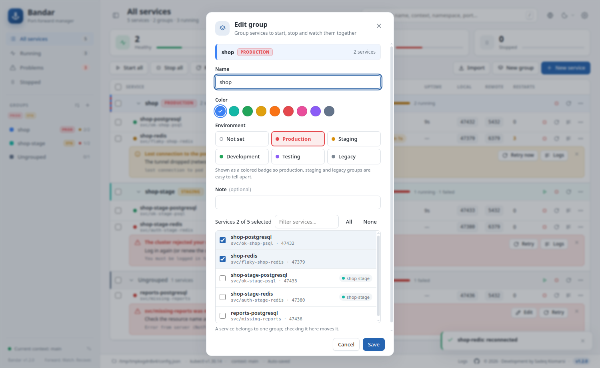
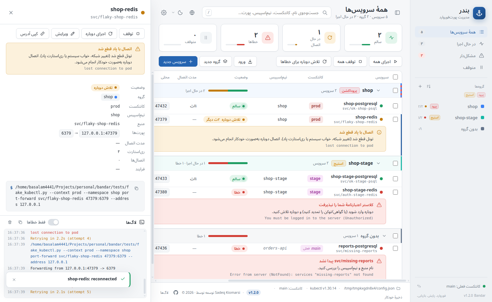
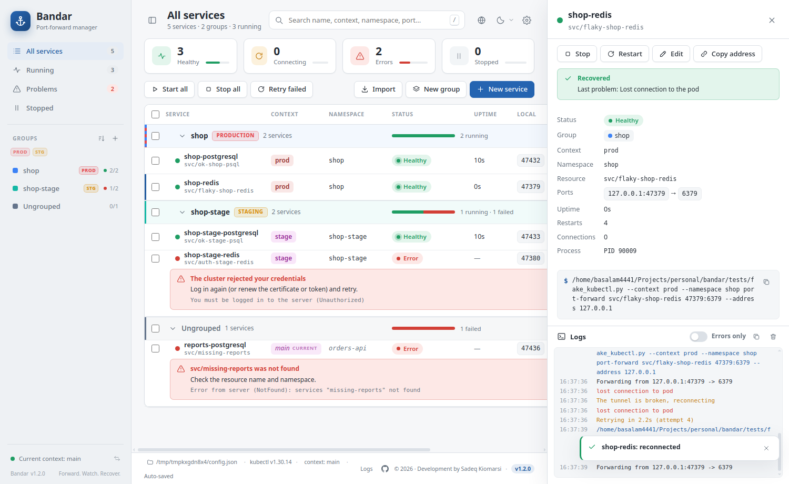

Every kubectl port-forward you need, in one calm window
Named services in groups, live status, automatic reconnection and errors that tell you what to do. Built for people who keep a dozen tunnels to databases and caches open all day.
بندر: مدیریت پورتفورواردهای kubectl با رابط گرافیکی، گروهبندی، اتصال دوبارهٔ خودکار و خطاهای قابلفهم؛ به فارسی، عربی و انگلیسی.

Made for daily tunnels
Bandar runs the same kubectl port-forward you would, and takes care of everything around it.
Named services
Context, namespace, resource and ports in one record. Paste any kubectl command to fill the form; namespaces, resources and their ports are suggested from the cluster.
Groups and environments
Group services, start or stop a whole group, and tag it PROD STG OLD so you never confuse production with staging.
Automatic reconnection
Dropped tunnels come back with exponential backoff. Problems that need you — expired credentials, a wrong context — stop and say so.
Errors you can act on
“Local port 5432 is used by postgres (PID 1234)” instead of a stack trace, with Retry, Edit or Free the port right under the service.
Ports stay yours
A local port belongs to one service even while it is stopped, and busy ports are caught before you save.
Switch contexts
See and change kubectl’s current context, open your kubeconfig, and restart the services that follow it.
Notifications
A desktop notification when a forward drops, fails to start or reconnects, with a Retry button.
One JSON file
Services, groups and settings live in ~/.config/bandar/config.json. Edit it by hand and Bandar reloads it.
Looks at home
Light, dark or system theme, six palettes, and a right-to-left interface in Persian and Arabic.



Install
Ubuntu 24.04 and newer, amd64. Bandar includes its own Python and Qt runtime; you only need kubectl.
Add the repository once
{{INSTALL_COMMANDS}}
Update after a new release
sudo apt update sudo apt install --only-upgrade bandar
Bring your list
# Import and export use one service per line; [group @environment] starts a group.
[orders @production]
orders-postgresql = kubectl --context prod -n orders port-forward svc/orders-psql 5432:5432
orders-redis = kubectl --context prod -n orders port-forward svc/orders-redis 6379:6379
Prefer a single file? Download the .deb from the latest release and run sudo apt install ./bandar_*.deb.